07.31.2013 19:08
python and numpy with slices
I never really got python slices
before now. I read http://docs.python.org/2/library/functions.html#slice
and http://docs.python.org/2/library/itertools.html#itertools.islice.
These 3 examples all make a hole in a np.zeros((10,10)) grid:
grid = np.zeros((10,10))
grid[slice(2,5), slice(3,7)] = 1
# is equivalent to:
grid = np.zeros((10,10))
for y in range(3,7):
grid[slice(2, 5), y] = 1
# and also:
grid = np.zeros((10,10))
for x in xrange(2,5):
for y in xrange(3,7):
grid[x][y] = 1
07.30.2013 18:46
TrailBehind's Skipper
An interesting new entry into the
iPad charting world: http://www.tryskipper.com/. NOAA
Charts, Weather Radar, the ability to try out the for pay app from
the free with no hassle.
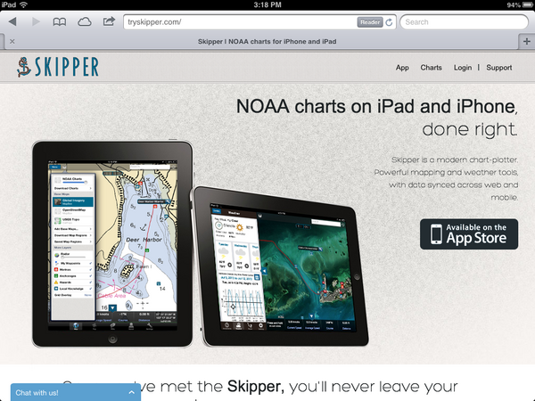
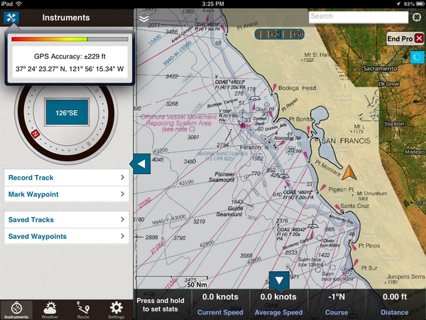
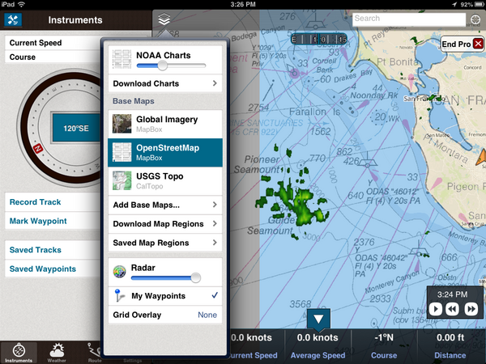
07.25.2013 00:31
GMT5 will use CMake
Oh hell. I don't like cmake. Autoconf
is hard, but cmake and scons just make me want to walk away. And
this after we got mb-system to build with autoconf. GMT 5 switches
from autoconf to cmake:
Transition from GNU Autotools to CMake
Transition from GNU Autotools to CMake
| GNU autotools | CMake |
| ./configure | cmake <source-dir> |
| make distclean | rm <build-dir> |
| rm config.cache | rm CMakeCache.txt |
| –prefix | CMAKE_INSTALL_PREFIX |
| –enable-netcdf | NETCDF_ROOT |
| –enable-gdal | GDAL_ROOT |
| –enable-pcre | PCRE_ROOT |
| –enable-matlab | MATLAB_ROOT |
| –enable-debug | CMAKE_BUILD_TYPE |
| –enable-triangle | LICENSE_RESTRICTED |
| –enable-US | UNITS |
| –enable-flock | FLOCK |
| CFLAGS | CMAKE_C_FLAGS |
| guru/gmtguru.macros | cmake/ConfigUser.cmake |
07.23.2013 10:14
The dangers of automation
United Airlines on over-reliance on
automation. I had discussions with a NOAA captain a few years ago.
The captain said that he often gives his bridge crew a twist on
many of the transits into or out of harbors. For example, he would
hide the radar from the bridge crew. He can keep an eye on things
and take over should something come up. The idea is to make sure
the crew is effective no matter what and not dependent on any one
technology to safely navigate. Or navigate only with paper charts.
And so forth.
An old video, but still very interesting. "Task saturating the crew" and using an autopilot to try to avoid a mid-air collision.
And this would be an under-reliance on technology... it's not the smartest thing ever to put yourself in the path of a feeding animal. Did these people have permit for this? Seems like even if they did, this is far beyond stupid.
An old video, but still very interesting. "Task saturating the crew" and using an autopilot to try to avoid a mid-air collision.
And this would be an under-reliance on technology... it's not the smartest thing ever to put yourself in the path of a feeding animal. Did these people have permit for this? Seems like even if they did, this is far beyond stupid.
07.21.2013 15:47
Big Data discussion at Ocean Exploration 2020
I recorded the panel session for the question on big data and cloud computing. I was sitting in the back and the audio is not very good. To help with that, I transcribed the video. This text is available as CC in in the video. It should be pretty close to what Dawn Wright [ESRI] and Jenifer Austin Foulkes [Google] were saying. I've added some links and the video is at the end of this post.
MARCIA: [missed the first part of the question]
grabbing video data, photographic information, high bandwidth data. What are your thoughts as representatives of organizations that are familiar with handling large amounts of data as to what are the prospects for rapid QA/QC and effective effective technologies for serving up that data to the public and in particular when we think of like HD (high definition) data that scientists are going to demand for doing research, how one can actually deliver that data to those who might need it in it's full quality?
[Jenifer passes the question to Dawn to go first]
DAWN: Fantastic question Marcia. And I think in terms of dealing with all of these, I mentioned among the 4 V's, was "variety." We had not really had a discussion yet about video data as a part of that V, and that's going to be very critical.
[The 4 V's: Volume, Variety, Velocity, Veracity]
MARCIA: So that's a 5th V?
DAWN: No. That's actually within the V of variety. In terms of, we have photographs, videos, text files, points, lines and polygons and observations, visualizations, scientific models. But within all that variety, we have not spoken that much about videos. And Christian Germain's [possibly the right person] comments to that extent were very pertinent to this, because with these long archives of these videos that we want to not only preserve, but also make available quickly, that's again where partnerships are very important. Because, with our academic and government agencies there has been a lot of work and a lot of funding to creating these archives, maintaining them, but sometimes the next step is not always easily attainable, particularly if your funding runs out And so for instance with Kate's situation with Neptune Canada, where there's been a data management system put in place, and your looking to do the next step, this is where I think the public-private partnership can really play a role. Because if your are able to work with companies who are actually looking at some of these problems in terms research. So I'd like to just step to the side a little bit to talk about how important this is when we think about research versus exploration. We've talked about "Is exploration part of research?" Is there a continuum of these two. Are they broad end points? Or are you really a scientist? I think in terms of ocean exploration. The ocean exploration challenges are actually the research questions, the research problems of information technology or data science. So, we want those kinds of challenges. So, being able to archive, QA/QC, and quickly disseminate video and other kinds of observations is something that is DELICIOUS to Google, to ESRI, to our partners. So, Marinexplore is a new startup company in Silicon Valley, that is building a marine platform. They are even building a marine operating system. And they are working now on specific machine learning techniques to automatically go through and QA/QC satellite observations and I think that could be applied to video. So I think it is just a matter of getting in. There was a discussion of a national "huddle." We could have a data or technology huddle and talk about some of these challenges in smaller groups and come up with very useful partner ships to solve these problems.
MARCIA: Okay. Great. Jen?
JENIFER: Yeah, I think that all sounds wonderful. You know I would say that towards your question, Google has some tools that can help dealing with large data. And those that I'm familiar with YouTube for video and so there's several groups like NOAA [NOAA Ship Okeanos Explorer - Best VIDEOS Of 2012-2010] and Schmidt Ocean Institute who are using YouTube Live, you know, to record and share video from their expeditions
MARCIA: Is it full HD TV?
JENIFER: It has full HD TV. Yeah. So I think that's a great tool for video. With regard to analysis, I'm not sure. I'm sure if it can do automated feature extraction. That would be something to look into. And Chris might have mentioned that. so I think the other thing would be Kurt has done a lot of work using our cloud hosting infrastructure to upload large amount of data. Specifically, looking at the space-based AIS ship tracking data [SpaceQuest] and then using Compute Engine to do really fast query analysis. I think that is a tool. He's been working on a bit of a how-to, how you can do it as well, to come out in the future. You can see his talk from Google I/O. [Google I/O 2013 - All the Ships in the World: Visualizing Data with Google Cloud and Maps] Kurt Schwehr, formerly from UNH, in the back there. He'd be happy to talk to anyone about his explorations using our Cloud Store for handling big data. And there is another tools, Google Maps Engine, which has been used for geospatial data and Earth Engine is a project where they look at cloud hosting large amounts of imagery data. So they put all the Landsat imagery in the cloud to allow scientists to do really fast change analysis for forest fires now and forest coverage changes. And that's been really powerful. Analysis that before took months, they do in like a day or a really short period of time. So I think that whole power of being able to, you know, do queries across lots and lots and lots of machines is a future tool that can be really really powerful. And I'm happy to be a part of the story.
DAWN: I think what Jenifer is referring to in terms of the cloud. You know, the cloud is another one of these terms that may be a mystery term. And I tend to think of a, literally, an atmospheric cloud in my head. But, we are talking about really a paradigm shift in computing and data distribution and there is some bit of trepidation about it But I think it is something that is really becoming more secure, more powerful, and easier to use. In the information technology world, we are all going that way. And so the cloud infrastructure is somthing that is going to be very powerful and something that ocean exploration really needs to embrace to a certain extent or to at least investigate. Be willing to have an open mind to investigate it. This is also It's going to be much more efficient, much faster. To the point that I made earlier about not just moving our datasets back and forth, but actually moving analysis, the analyses that Jenifer and I have been talking about, moving that to the data once and then you have your outputs from that can go out much more quickly including to the general public and to school kids on their tablets
MARCIA: So, let's suppose we're at a point [video cut off]
Since Dawn mentioned security, you can check out: Google-CommonSecurity-WhitePaper-v1.4.pdf: GoogleâÄôs Approach to IT Security A Google White Paper [2012]. Google has ISO 27001 certification. Michael Manoocheri: Google I/O 2011: Compliance and Security in the Cloud [YouTube video]
07.20.2013 12:10
OceanExploration 2020 meeting at the Aquarium of the Pacific
Lots of discussion of where we want
to go in the future (next 7 years) at the Ocean
Exploration 2020 meeting at the Aquarium of the Pacific.
You can join in for a lot of this via web streaming.
This morning, we've heard from people like Marcia McNutt and Kathy Sullivan
From yesterday:
From today:
Walter Monk recommended that conference include a dedication to ADM James D. Watkins who passed away a year ago. The oceans community owes ADM Watkins quite a bit.
Dave Caress and I have been working a bunch on the autoconf setup for mb-system while at the conference. I'm looking at parts of the mapserver configure.in setup when figuring out how mb-system will make sure that it can link against libraries like gdal.
#oe2020
This morning, we've heard from people like Marcia McNutt and Kathy Sullivan
From yesterday:
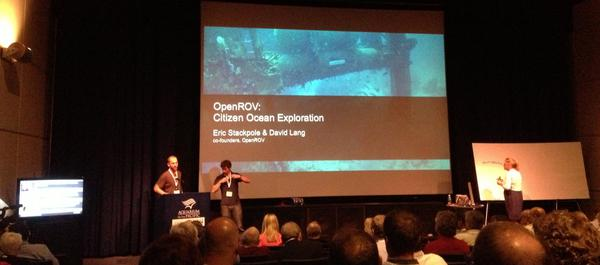
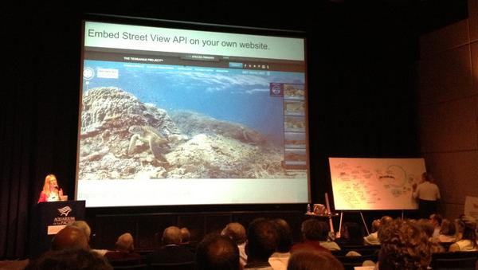
From today:
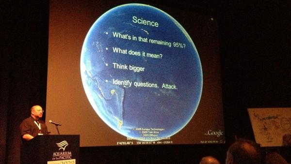
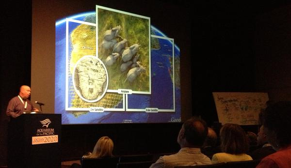
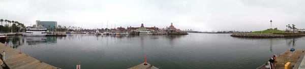
Walter Monk recommended that conference include a dedication to ADM James D. Watkins who passed away a year ago. The oceans community owes ADM Watkins quite a bit.
Dave Caress and I have been working a bunch on the autoconf setup for mb-system while at the conference. I'm looking at parts of the mapserver configure.in setup when figuring out how mb-system will make sure that it can link against libraries like gdal.
#oe2020
07.14.2013 23:19
Python logging module
I made big use of the python logging
module in my Google I/O talk 2 months ago, but you'd never know it
from the talk. I created a python logging module around the boto
library that periodically writes to cloud store. And you can also
register a logger to log locally with log rotation, etc.
https://github.com/gmr/pycon2013-logging
https://github.com/gmr/pycon2013-logging
07.10.2013 11:48
First contribution to gdal
Yesterday, I made my first
contribution to gdal. Frank pinged me with bug 5152 - False northing in
BAG georeferencing is ignored. I took a quick walk through
W00158 (NOAA Hydrographic survey from the R/V AHI in American
Samoa). gdal was placing the survey way up in the artic.
I got the extra bonus of being able to have Frank look over my shoulder at each step and I had a working solution in short order. Frank was then kind enough to put in my patch and add an explanation comment: r26159
I got the extra bonus of being able to have Frank look over my shoulder at each step and I had a working solution in short order. Frank was then kind enough to put in my patch and add an explanation comment: r26159
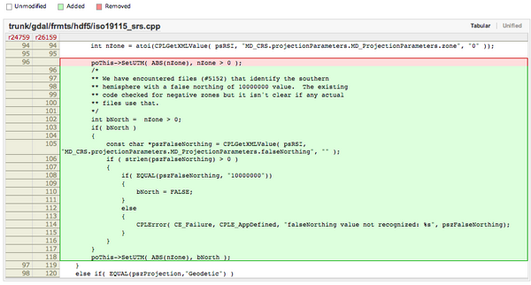
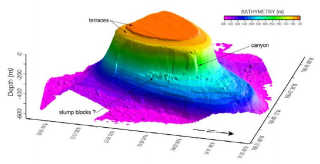
07.07.2013 23:31
Illegal, Unreported and Unregulated (IUU) Fishing
Analyze recently hosted a meeting on
IUU fishing. I did not attend, but Analyze has released notes from
the meeting.
Analyze Hosts First IUU Fishing Roundtable: word doc [Analyze] and pdf
Analyze Hosts First IUU Fishing Roundtable: word doc [Analyze] and pdf
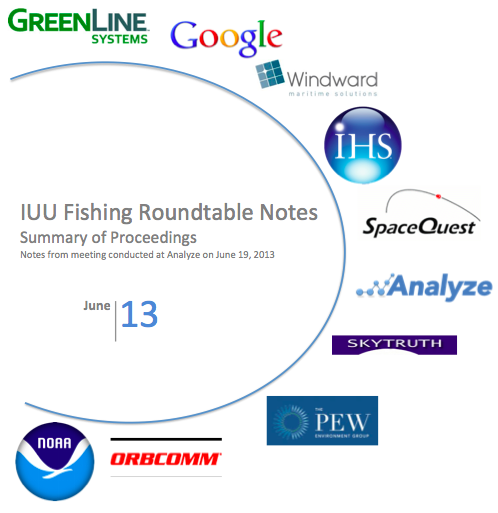
07.06.2013 09:52
ipython notebook for coastal ocean models
Scipy 2013
videos
Slides and code from the talks
I love this:
Emacs + org-mode + python in reproducible research; SciPy 2013 Presentation by John Kitchin at CMU. View the org file as rendered by github - pdf
Slides and code from the talks
I love this:
Emacs + org-mode + python in reproducible research; SciPy 2013 Presentation by John Kitchin at CMU. View the org file as rendered by github - pdf
07.01.2013 20:00
NSA special series
There are a lot of fun documents
available from the NSA. e.g.
UNITED STATES CRYPTOLOGIC HISTORY Special Series Crisis Collection
Volume 1 Attack on a Sigint Collector, the U.S.S. Liberty,
1981
I'm now reading "It Wasn't All Magic: The Early Struggle to Automate Cryptaalysis, 1930's - 1960's." by Colin Burke, 2002.TOP SECRET//COMINT//REL TO USA, AUS, GAN, GBR and
NZL/X1
Cryptologic Histories
To make sure I get proper NSA notice, M-x spook:
HAMASMOIS government SWAT anthrax ammunition quarter S Key SAPO gamma TELINT FTS2000 MILSATCOM PET Peking UNSCOM
Notes from reading (all wikipedia):
I'm now reading "It Wasn't All Magic: The Early Struggle to Automate Cryptaalysis, 1930's - 1960's." by Colin Burke, 2002.
Cryptologic Histories
To make sure I get proper NSA notice, M-x spook:
HAMASMOIS government SWAT anthrax ammunition quarter S Key SAPO gamma TELINT FTS2000 MILSATCOM PET Peking UNSCOM
Notes from reading (all wikipedia):